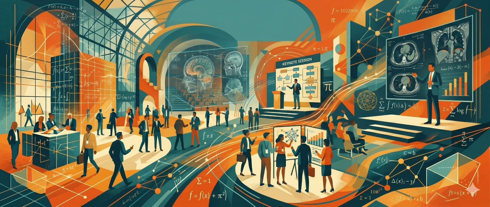

22–23 March 2027 · School of Mathematics, the Mall Room (level 8), University of Leeds. A new biennial meeting for the UK inverse problems community — senior academics, postdocs and PhD students presenting current work.
Interest in inverse problems and their applications has grown steadily over the last three decades. While well-established annual meetings exist internationally and within the EU, much of the underlying research is driven by UK groups. This conference launches a biennial UK series, hosted at rotating centres of excellence.
The aim is informal: bring together researchers in the UK and beyond — senior academics, research staff and postgraduate students — to present current work. Selected papers will appear in Conference Proceedings published with an ISBN and distributed at the conference.
Full papers for the Conference Proceedings should be prepared with the LaTeX template below. Maximum 10 pages. Figures should be black and white — use different line styles or markers, with large axis labels.
The £90 registration fee covers lunches, the conference dinner, refreshments and the published proceedings.
Presentation-only or attendance-only participation (without submitting a paper) is possible. Please register and pay the fees as early as possible using the payment link available here.
Department of Applied Mathematics, University of Leeds, Leeds LS2 9JT, UK